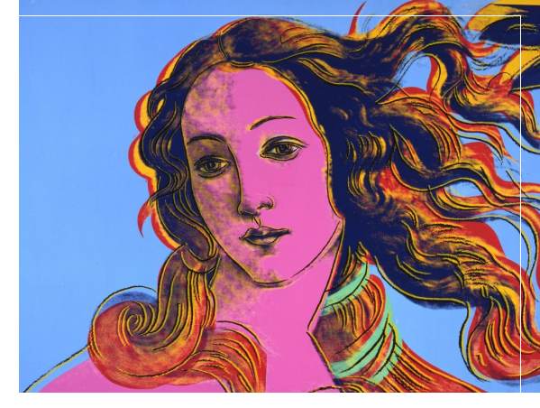

Чому я не розумію сучасного мистецтва?» – питання, яке досить часто лунає з вуст пересічної людини. Здається, це щось незвичайне, неземне, некласичне. Так-так, ми звикли саме до класики, коли ти чітко розумієш, що зображено на картині і що хотів сказати автор цією скульптурою. Напевно, головний синонім до «сучасного мистецтва» – незрозумілість, яка дуже часто лякає простих, необізнаних у цій сфері людей
Мистецтво Бароко теж колись було сучасним. І відповідало викликам тієї епохи. Воно величне та гарне, але не відповідає сьогоднішнім тенденціям. А сучасне мистецтво – відповідає. Світ йде вперед і все крокує за ним.
У новому просторі Art Ukrainian Gallery відкрився великий скульптурний проект, який поєднує новітні технології доповненої реальності із мистецтвом пластики. Форум «Більше ніж скульптура» – «це експериментальний проект, що має створити простір для дискусії, залучивши як митців, так і відвідувачів», – Дарина Мо Мот, співкуратор проекту. Зайшовши туди, зразу думаєш, що це доволі дивно. А як вражають новітні технології: ти наводиш телефон з увімкненим додатком на картинку і бачиш скульптуру у 3Dвимірі.
Що взагалі несе сучасне мистецтво? Запитавши у відвідувачів форуму, ми зрозуміли, що мало хто взагалі розуміється на такому мистецтві. «Мені, наприклад, подобається класичне мистецтво, сучасне для мене дивне і неординарне», – Марина Коструба (16 років). Але все ж багато людей приходять на виставку, аби самовдосконалитися. «Дивлячись на ці скульптури, мені, як художнику, щось зрозуміле, щось ні, а щось сильно надихає. Тут все індивідуально», – Олександра Поліщук (16 років).
Насправді, доки кожен з нас не захоче подумати над витвором сучасного мистецтва, доти ми не зрозуміємо його. Кожен витвір – це думки та душа автора. Завдяки цьому пізнання мистецтва є більш свідомим, глибоким і цікавим. Хтось намагається зрозуміти його , а хтось одразу критикує, адже легше глянути на скульптуру і сказати, що вона незрозуміла, аніж хвилинку постояти і замислитися.
Можливо, це відбувається тому, що наша свідомість намагається обійти стороною те, чого не розуміє. У кожного в голові свої кордони сприйняття цього світу: хтось боїться стрибнути з парашутом , а для когось це не викликає ніяких труднощів. Можна провести аналогію із сучасним мистецтвом. Люди, які не вважають його за мистецтво взагалі, рідко намагалися зрозуміти сучасні полотна.
Історія доводить ,що не всі нині знамениті митці були такими під час свого життя. Інколи між створенням та справжнім визнанням проходять десятки або сотні років. Наприклад Вінсент Віллем ван Гог був дуже бідним, його не визнавали як творця чогось чудового , він так і помер у злиднях. А зараз хто не знає його «Зоряну ніч»?
Роки біжать за роками, все змінюється. Навіть страшно уявити, що буде через десятки років. Ніхто не знає, що буде завтра, але в одному впевнені всі — мистецтво не припинить свій розвиток ніколи
